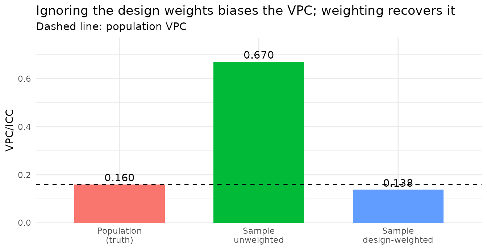

Design-weighted MAIHDA for survey data
Hamid Bulut
2026-06-15
Source:vignettes/design_weighted.Rmd
design_weighted.RmdWhy survey weights need their own engine
Most real MAIHDA applications run on complex survey
data – NHANES, PISA, BRFSS – where individuals are sampled with
unequal probabilities and each carries a sampling (design)
weight. Ignoring those weights gives estimates for the
sample, not the population. But survey weights are
not the same thing as lme4’s
weights = argument: those are precision weights
that rescale the residual variance, so feeding survey weights to
lmer()/glmer() maximises the wrong objective
and returns invalid population estimates.
MAIHDA therefore routes design weights through a different estimator.
Supplying sampling_weights with
engine = "lme4" is an error rather than a
silent misfit:
library(MAIHDA)
fit_maihda(y ~ 1 + (1 | gender:edu), data = data.frame(),
sampling_weights = "w", engine = "lme4")
#> Error:
#> ! Sampling-weight column not found in data: wWith the default engine, sampling_weights switches (with
a message) to engine = "wemix": weighted
pseudo-maximum-likelihood via WeMix::mix(), the estimator
built for NAEP/PISA-style survey analysis (Rabe-Hesketh & Skrondal
2006). The individual weights enter at level 1; the level-2 (stratum)
weights are 1, because intersectional strata are
exhaustive population cells.
A population with a known VPC
To see why this matters, we build a finite population whose intersectional VPC we can measure, then sample from it informatively – in a way that biases the naive analysis – and check which fit recovers the truth.
set.seed(2024)
Npop <- 20000
gender <- sample(c("female", "male"), Npop, replace = TRUE)
edu <- sample(c("low", "mid", "high"), Npop, replace = TRUE)
stratum_id <- paste(gender, edu, sep = ":")
# True stratum effects across the 6 gender x education cells.
u_true <- c("female:low" = 2, "female:mid" = 0, "female:high" = -2,
"male:low" = 3, "male:mid" = 0.5, "male:high" = -2.5)
y <- 50 + u_true[stratum_id] + rnorm(Npop, sd = 5)
population <- data.frame(y = y, gender = gender, edu = edu)Fitting the whole population gives the target VPC – the between-stratum share of variance we want any sample-based estimate to reproduce:
m_pop <- fit_maihda(y ~ 1 + (1 | gender:edu), data = population)
vpc_pop <- glance(m_pop)$vpc
vpc_pop
#> [1] 0.1599225Informative sampling biases the naive fit
Now draw a sample in which selection depends on the outcome,
with a sign that flips by the stratum’s effect:
higher-y people are over-sampled in above-average strata
and under-sampled in below-average ones. This stretches the
apparent between-stratum spread – the kind of informative
sampling that badly distorts a naive variance partition. The design
weight is the inverse of each person’s inclusion probability.
slope <- 0.35 * sign(u_true[stratum_id]) # flips by stratum effect
incl_p <- plogis(-1.8 + slope * (population$y - 50)) # selection on the outcome
sampled <- runif(Npop) < incl_p
survey <- population[sampled, ]
survey$w <- 1 / incl_p[sampled] # design weight
nrow(survey)
#> [1] 5971An unweighted MAIHDA fit on this sample analyses the
sampled people as if they were the population – and the selection on
y distorts the variance partition:
m_unw <- fit_maihda(y ~ 1 + (1 | gender:edu), data = survey)
glance(m_unw)$vpc
#> [1] 0.6702187Design-weighted MAIHDA recovers it
Pass the weight column via sampling_weights and the fit
switches to the wemix engine, weighting each observation by
its design weight so the estimates are
population-representative again:
m_w <- fit_maihda(y ~ 1 + (1 | gender:edu), data = survey,
sampling_weights = "w")
#> fit_maihda(): 'sampling_weights' supplied; using engine = "wemix" (design-weighted pseudo-maximum-likelihood via WeMix). Set 'engine' explicitly to silence this message or to choose engine = "brms".
glance(m_w)$vpc
#> [1] 0.1382455
library(ggplot2)
comp <- data.frame(
fit = factor(c("Population\n(truth)", "Sample\nunweighted", "Sample\ndesign-weighted"),
levels = c("Population\n(truth)", "Sample\nunweighted",
"Sample\ndesign-weighted")),
vpc = c(vpc_pop, glance(m_unw)$vpc, glance(m_w)$vpc)
)
ggplot(comp, aes(fit, vpc, fill = fit)) +
geom_col(width = 0.65) +
geom_hline(yintercept = vpc_pop, linetype = "dashed") +
geom_text(aes(label = sprintf("%.3f", vpc)), vjust = -0.4) +
scale_y_continuous(expand = expansion(mult = c(0, 0.15))) +
labs(x = NULL, y = "VPC/ICC",
title = "Ignoring the design weights biases the VPC; weighting recovers it",
subtitle = "Dashed line: population VPC") +
theme_minimal() + theme(legend.position = "none")
The unweighted VPC is several times the population value, because the
stratum-dependent selection stretches the apparent between-stratum
spread; the design-weighted fit weights each person by the inverse of
their selection probability and restores the population partition. The
whole toolkit – summary(), stratum predictions, the plots,
calculate_pvc(), and the maihda() two-model
decomposition – is design-weighted once you pass
sampling_weights, with design-consistent (sandwich)
standard errors for the fixed effects, and a design-weighted AUC for a
binary outcome.
Scope and limitations
-
Canonical structure only. The
wemixengine supportsgaussian(identity)andbinomial(logit)with the single(1 | stratum)intercept. Crossed random effects –decomposition = "crossed-dimensions"andcontext =– needengine = "lme4"or"brms". -
No parametric bootstrap for
wemix(a design-based interval needs replicate weights). Rows with missing or non-positive weights are dropped with a warning. -
brms alternative.
engine = "brms"acceptssampling_weightsas likelihood weights – a pseudo-posterior: the point estimates are design-consistent, but the credible intervals are not design-based (a message says so).
fit_maihda(y ~ 1 + (1 | gender:edu), data = survey,
sampling_weights = "w", engine = "brms")A note on the bundled data.
maihda_health_data(NHANES) andmaihda_country_data(PISA) are teaching subsets that deliberately drop the surveys’ weights, so they are not survey-representative. Usesampling_weightswith your own weighted data, exactly as shown above.
See also
- Introduction to MAIHDA – the end-to-end workflow.
- Planning a MAIHDA study – choosing strata and when MAIHDA fits.
- Comparing intersectional inequality across groups.